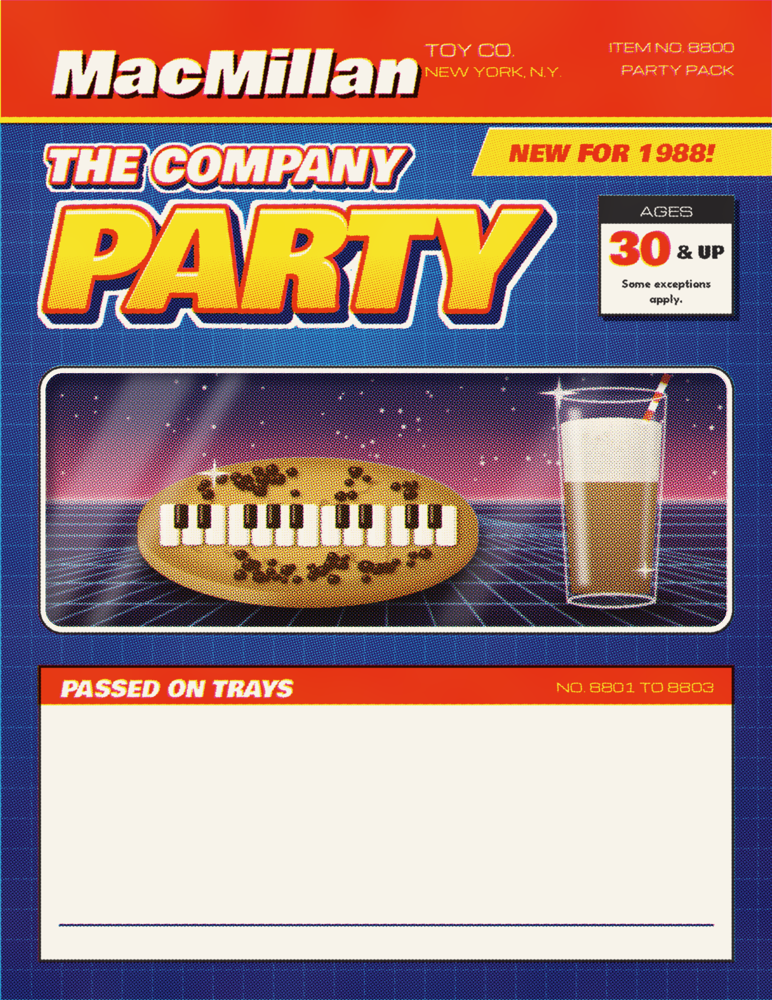

GROWN-UP FOOD FOR A KID AT HEART.
8 PIECES. NO BATTERIES NEEDED.CONTENTS MAY BE BIGGER THAN SHOWN.
NO. 8801 TO 8803
NO. 8801
Griddled baby corn
Little ears blanched, then blistered in butter on a hot griddle. Crushed red pepper, lime zest, salt and a wedge to squeeze.
Hold it like a cob.
NO. 8802
Red caviar canapés
Salmon roe and snipped chives over crème fraîche on crisp water crackers, put together just before they go out.
An acquired taste.
NO. 8803
Soft pretzels
Twisted by hand, baked deep brown and scattered with coarse salt. Yellow mustard to dip.
Warm from the oven all night.
THE CART, THE COOKIE AND THE FOUNTAIN ARE ON THE BACK OF THE BOX.